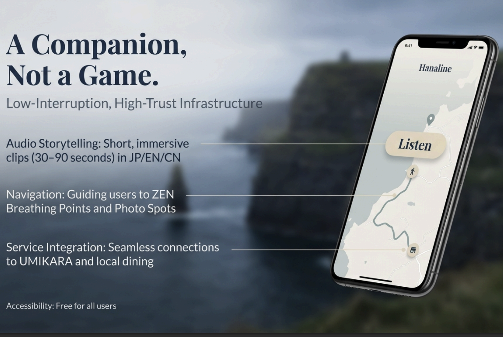

代表メッセージ
これまでに出会った地域の事例は、それぞれの地域の可能性を考える上でとても大切な「広い視点」を与えてくれました。
ひとつの地域での企画から実行までの流れを、そこだけの成功事例で終わらせてしまうのはもったいないと感じています。
CBCはこれらの取り組みを「仕組み（フォーマット）」としてまとめ、他の地域へ広げていきます。この仕組みを当てはめるだけでなく、地元に最適な形で根付かせていくプロセスと、事業の継続性を重視しています。
一過性のイベントで終わらせず、最終的に地元が自走できるサポートまで伴走する。そして、日本各地の持続可能な発展に貢献できる環境を作っていきたいと考えています。
CBCの強み
品質管理とプロジェクトマネジメント
海外ビジネスや外資系企業での経営実績を活かし、海外輸出を視野に入れた衛生管理（HACCP等）導入や、現状とリソースを理解したプロジェクトの企画、実行をサポートします。
地域の強みとアイディアの融合
地域の伝統産業にNFTやデジタル技術などの新しいアイディアを掛け合わせ、新たな関係人口の創出と持続可能なコミュニティ形成に取り組みます。
強みを活かす人材育成サポート
グローバル認定コーチとして、人材の「才能」に注目します。自発的で突破力のあるチームビルディングを行い、組織の底上げを図ります。
取り組み・実績
-

水産加工場のHACCP認証・事業計画立案（地域再生マネージャー）
地方自治体にて、対米輸出に向けたHACCP（米国基準）認証の体制構築を主導。
現場の衛生管理プログラム策定から、関連機関へ向けた事業計画立案まで伴走しています。 -

NFTを活用した特産品の販売・コミュニティ形成サポート
地元農家と協働し「農産物の年間オーナー制度（NFT）」を展開。
デジタル技術と現地でのリアルな農業体験を掛け合わせ、県外からの継続的な関係人口を創出しています。 -

海外アプリメーカーとの観光アプリ開発提案
グローバルな知見を活かし、海外メーカーと連携したインバウンド・国内観光向けアプリ開発を提案。
地域の観光資源をデジタル上で可視化し、新たな体験価値を生み出します。 -

企業向けマネジメント研修（強み開発・組織開発）
国内企業のマネジメント層に対し、個人の「資質」を言語化し活用するワークショップを主催。
自己理解、他者理解、チーム力向上を支援、地域の事業体や行政組織にも応用可能です。
会社概要
- 会社名
- 有限会社シービーシー
- 代表者
- 代表取締役 米永 憲司
- 所在地
- 〒665-0803
兵庫県宝塚市花屋敷つつじガ丘1番20号 - info@cbc2001.com
有限会社CBCは2001年に総合商社を退職した父（米永繁夫）が中心となって設立しました。
当時は海外製品の輸入、研修生の受け入れやボランティア、地域への日本文化の継承など、草の根の国際交流と地域貢献に尽力していました。
父の代から息づく「グローバルな視野を持ちながら、地域の人と深く関わる」という会社のDNAを受け継ぎ、2024年より事業を再始動いたしました。
代表プロフィール
代表取締役 米永 憲司

1963年大阪生まれ。
国内大手食品メーカー、欧州系外資食品企業、北米拠点の食品商社などで、R&Dからサプライチェーンマネジメント、企業経営まで幅広く歴任。
30年以上のグローバルかつ実務的なマネジメント経験を持つ。
現在は兵庫県宝塚市を拠点に、地域創生プロジェクトを推進中。
・地域再生マネージャー（福井県高浜町）
・グローバル認定ストレングスコーチ
・車両系建設機械運転技能講習修了